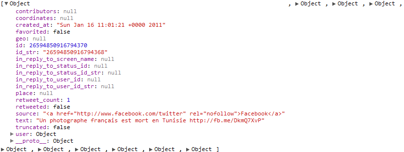

Nous allons interroger l'api de twitter afin de remplir la widget suivante.
<div id="twitter"> <img src="twitter.png" width="120" height="30" alt=""/> <div class="messages"></div> </div>
Les ressources disponibles pour ce projet :
Nous allons coder twitter.js afin qu'il aille chercher les données et qu'il affiche les 3 derniers twitts.
Twitter offre une api très ouverte afin de récupérer ses contenus
Nous allons utiliser le service user_timeline
http://api.twitter.com/statuses/user_timeline.json? screen_name=RTLFrance&callback=handleJson
Au chargement du document il faut appeler ce service grâce à jquery.
$(document).ready(function() {
// call twitter api
});
Le json est constitué d'un tableau de messages.
Jquery permet facilement de construire du html et de l'injecter dans l'arbre DOM existant.
Voici le html que nous souhaitons construire avec le json fourni par twitter.
<div id="twitter">
<img src="twitter.png" width="120" height="30" alt=""/>
<div class="messages">
<a href="http://twitter.com/RTLFrance" target="_blank">message 1</a>
<a href="http://twitter.com/RTLFrance" target="_blank">message 2</a>
...
</div>
</div>